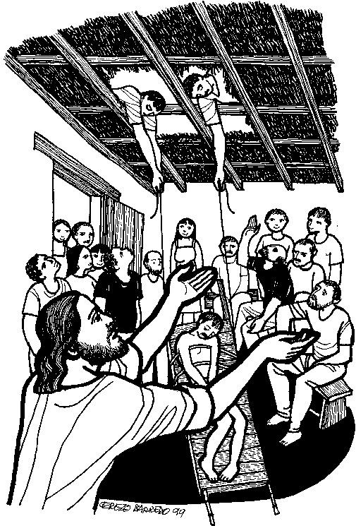

This week's lessons: Isaiah 43:18-25 Psalm 41 2 Corinthians 1:18-22 Mark 2:1-12
This
week's lessons: Isaiah
43:18-25 Psalm
41 2
Corinthians 1:18-22 Mark
2:1-12
Pre-School
Pew-work
MISIONEROS DEL SAGRADO CORAZÓN EN E: http://www.mscperu.org

Next week's lessons: 2 Kings 2:1-12, Psalm 50:1-6, 2 Corinthians 4:3-6, Mark 9:2-9